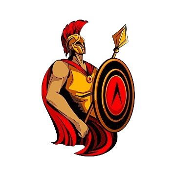
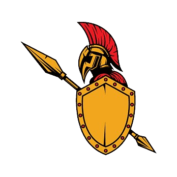

Il ne vous reste plus qu'à envahir la Gaule pour asseoir votre domination sur le monde.
Mais la résistance de l'adversaire est rude, il va falloir que l'on vous aide pour remporter la guerre.
Vous jouez contre l'ordinateur, vous commencez la guerre avec une capitale.
Prenez bien garde à ne pas la perdre car cela serait synonyme de défaite.
Vous l'avez compris,
le but est de conquérir la carte pour ensuite assiéger la capitale de l'ennemi.
Bienvenue dans notre wargame mode romaine !
C'est un jeu en tour par tour, faites avancez vos troupes en cliquant sur les
centres des zones. En réalisant cette action, des descriptions de régions
et de vos armées et unités vous seront données.
Vous pourrez par exemple choisir de construire des batiments.
Ou encore d'attaquer l'ennemmi.
Les ressources globales sont visibles à gauche de l'écran,
ces memes ressources changent forcément à chaque fin de tour
en fonction des actions que vous réalisez à chaque tour.
Validez votre tour quand vous estimez avoir réalisé toutes vos actions
et remportez la guerre !
La carte du jeu est découpée en 17 zones en oubliant "Britannia".
Chacune des 17 zones est soit une zone rurale, soit une zone de construction de villes.
Dans les zones rurales, vous pourrez construire des batiments de productions qui vous rapporteront des ressources globales.
Dans les zones dites urbaines, vous pourrez construire des batiments qui vous rapporteront des ressources locales.
Ces ressources sont essentielles pour gagner la guerre, alors ne négligez pas la construction de batiments.
Attention ! Une seule construction par zone, alors choisissez bien !
Voici le tableau des constructions disponibles en ville.
| Nom | Cout | Production | Condition |
|---|---|---|---|
| Forum | 20 petra, 500 denarri | + 100 denarri par manupretium | ordo >= 70 Un seul de ce type |
| Bains | 10 petra, 500 denarri | + 10 ordo | Un seul de ce type |
| Aqueduc | 30 petra, 1500 denarri | + 20 ordo | Un seul de ce type |
| Amphithéâtre | 20 petra, 1000 denarri | + 20 ordo | Un seul de ce type |
| Temple | 20 petra, 1000 denarri | + 10 ordo | |
| Caserne | 10 lignum, 5 petra, 1000 denarii | Une unité d'infanterie possible par tour | ordo > 50 |
| Ecurie | 20 lignum, 5 petra, 1000 denarri | Une unité de cavalerie possible par tour | ordo > 50 |
Voici le tableau des constructions disponibles en zones rurales.
| Nom | Cout | Production | Condition |
|---|---|---|---|
| Ferme | 10 lignum, 1 ferrum, 1 petra, 100 denarri | + 100 victualia | |
| Pêcherie | 5 lignum, 50 denarri | + 50 victualia | Présence d'une mer |
| Camp de bûcherons | 200 denarri | + 10 lignum | |
| Mine de fer | 10 lignum, 500 denarri | + 10 ferrum | Présence d'un gisement |
| Mine d'or | 10 lignum, 2 ferrum, 500 denarri | + 1000 denarri | Présence d'un gisement rare |
| Carrière | 10 lignum, 2 ferrum, 500 denarri | +10 petra | Présence d'un gisement |
Il n'y a aucune construction de départ.
denarri : la monnaie du jeu.
victualia : les victuailles, la nourriture.
lignum : le bois.
ferrum : le fer.
petra : la pierre.
ordo : l'ordre public ou le moral de la population.
Il s'agit d'un pourcentage qui diminue en fonction du manupretium et
en fonction du fait que la dite ville soit conquise.
En revanche, l'ordo remonte si on construit des batiments.
manupretium : main d'oeuvre, utile pour lever des troupes et des impôts.
| denarii | 2000 |
| victualia | 500 |
| lignum | 20 |
| ferrum | 20 |
| petra | 20 |
| manupretium | 2 par ville |
| ordo | 80 par ville |
C'est simple, pour que la population d'une ville augmente de 1 (manupretium),
il faut avoir assez d'ordo et attendre plusieurs tours.
N'oubliez pas que les batiments des villes peuvent faire remonter l'ordo de votre ville.
Faites accroitre votre population pour ensuite lever des armées !
Unité : troupe indivisible du meme type et d'à peu près 1000 hommes.
Armée : ensemble d'unités (maximum 6 unités) agissant ensemble.
| Nom | image | Cout | Condition | Entretien | Statistiques |
|---|---|---|---|---|---|
| Hastati (infanterie légère) |  | 1 manupretium, 2 ferrum | Caserne | 50 victualia, 100 denarri | santé : 10 moral : 5 puissance : 4 résistance : 0 vitesse : normale |
| Légionnaires (infanterie loudre) |  | 1 manupretium, 10 ferrum | Caserne | 60 victualia, 120 denarri | santé : 10 moral : 10 puissance : 4 résistance : 2 vitesse : normale |
| Auxiliaires de cavalerie (cavalerie légère) | 1 manupretium, 4 ferrum | Ecuries | 60 victualia, 120 denarri | santé : 15 moral : 5 puissance : 3 résistance : 0 vitesse : rapide |
|
| Equites(cavalerie lourde) | 1 manupretium, 14 ferrum | Ecuries | 80 victualia, 160 denarri | santé : 15 moral : 10 puissance : 5 résistance : 1 vitesse : rapide |
Il n'y a aucune unité de départ.
Sans entretien, une unité perd 1 de moral et 1 de santé par tour ! A 0 de moral,
l'unité perd 1 de santé par tour supplémentaire, 0 de santé = unité détruite.
Il est donc important de faire revenir ses troupes de temps en temps pour qu'elles soient ravitaillées,
et que vos troupes regagnent 1 de santé et 1 de moral par tour.
S'il n'y a pas assez de ravitaillement pour toutes les unités mais qu'il peut partiellement couvrir
les besoins d'entretien,
il est distribué aléatoirement chaque tour
(les premières unités servies le
sont totalement, les autres sont privées de ravitaillement).
Santé : plus importante pour la cavalerie.
Moral : peu importe le type d'unité, le moral varie entre 5 et 10.
Puissance : peu importe le type d'unité, la puissance varie entre 3 et 5.
Résistance : peu importe le type d'unité, la résistance varie entre 0 et 2.
Vitesse : rapide pour la cavalerie, normale pour l'infanterie.
Vos troupes et armées ne peuvent se déplacer que dans des zones dites adjacentes.
En cas de mauvaise séléction de région de déplacement, un message vous avertira
en vous disant que le déplacement est alors impossible.